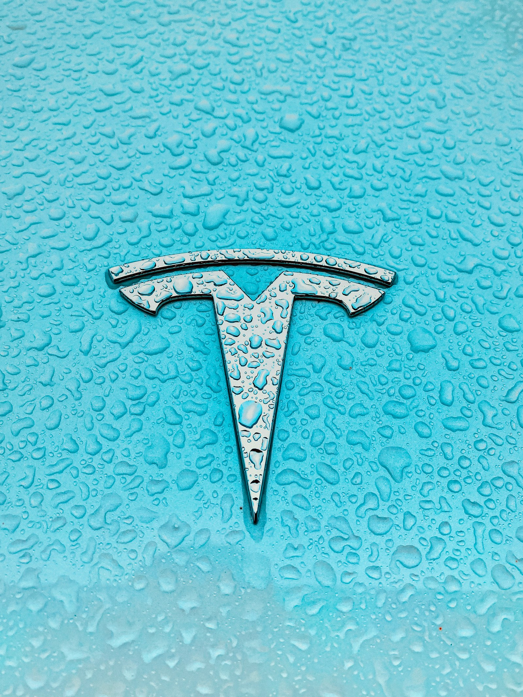

Venue & Travel
The workshop is hosted at the Faculty of Mathematics and Informatics of Sofia University “St. Kliment Ohridski”, on the Lozenets campus in southern Sofia.

The Faculty
The Faculty of Mathematics and Informatics (Факултет по математика и информатика, ФМИ) is the oldest and largest centre of computer-science and IS scholarship in Bulgaria. Founded in 1889 as the Physics-Mathematics Faculty of the Higher School (later Sofia University), it now hosts the BSc, MSc and PhD programmes in Software Engineering, Information Systems, Computer Science and Applied Mathematics that train the bulk of the country's IS researchers.
The Lozenets campus of FMI sits at the southern end of James Bourchier Boulevard, near the Sofia metro station of the same name, and is roughly fifteen minutes from the city centre by public transport.
| Address | Detail |
|---|---|
| Building | Faculty of Mathematics & Informatics, Sofia University |
| Street | 5 James Bourchier Blvd. (бул. Джеймс Баучер 5) |
| City | 1164 Sofia, Republic of Bulgaria |
| Main hall | Auditorium 325, third floor |
| Metro | M2 — “James Bourchier” station (300 m walk) |
Getting to Sofia
By air. Sofia Airport (SOF) has direct connections to all major European hubs (Frankfurt, Munich, Vienna, Zurich, Paris CDG, Amsterdam, Istanbul) and seasonal service to Athens, Belgrade, Skopje, Bucharest, Thessaloniki, Tirana and Pristina. Terminal 2 is the main international terminal. The M4 metro line connects Terminal 2 directly to the city centre in 18 minutes (single ticket: 1.60 BGN / €0.85).
By train. Sofia Central Station (Централна гара) is reached by direct international service from Bucharest, Belgrade, Thessaloniki and Istanbul. The station is on the M2 metro line, four stops from James Bourchier.
By car. Sofia is connected to Greece (Thessaloniki, via the A3 / E79), Serbia (Niš, via the A6 / E80) and Romania (Bucharest, via E70/E83) by motorway. Parking near the FMI campus is limited; we recommend public transport.
Recommended Hotels
| Hotel | Category | Distance to FMI |
|---|---|---|
| Hilton Sofia, 1 Bulgaria Blvd. | ★★★★★ | 800 m walk |
| Hotel Hemus, Sofia (boulevard Cherni Vrah) | ★★★★ | 1.2 km |
| Hotel Diter, central Sofia | ★★★ | 3 km / 4 metro stops |
| Sofia University guest-house (limited availability) | — | on campus |
BulAIS has negotiated discount codes for the Hilton Sofia and Hotel Hemus — please request these from the local-organisation chair.
Visa & Entry
Bulgaria is a member of the European Union and joined the Schengen Area (air and sea borders) in March 2024. Most workshop participants will not require a separate Bulgarian visa. Participants from countries that require a Schengen visa should apply at the Bulgarian consulate in their country of residence, allowing at least four weeks. The BulAIS secretariat can issue official invitation letters on request.
A Day in Sofia

If you are extending your stay, we suggest:
- The Sveti Georgi rotunda, the oldest preserved building in Sofia (4th c.), in the inner courtyard of the Presidency.
- The National Archaeological Museum — Thracian gold collections from Panagyurishte and Valchitran.
- A funicular ride up Mount Vitosha, with traditional mehana dining at Aleko hut.
- The Boyana Church (UNESCO) on the southern slopes — 13th-century frescoes of European art-historical importance.
- Day-trip to the Rila Monastery, two hours south by car (UNESCO; a working monastery since the 10th century).